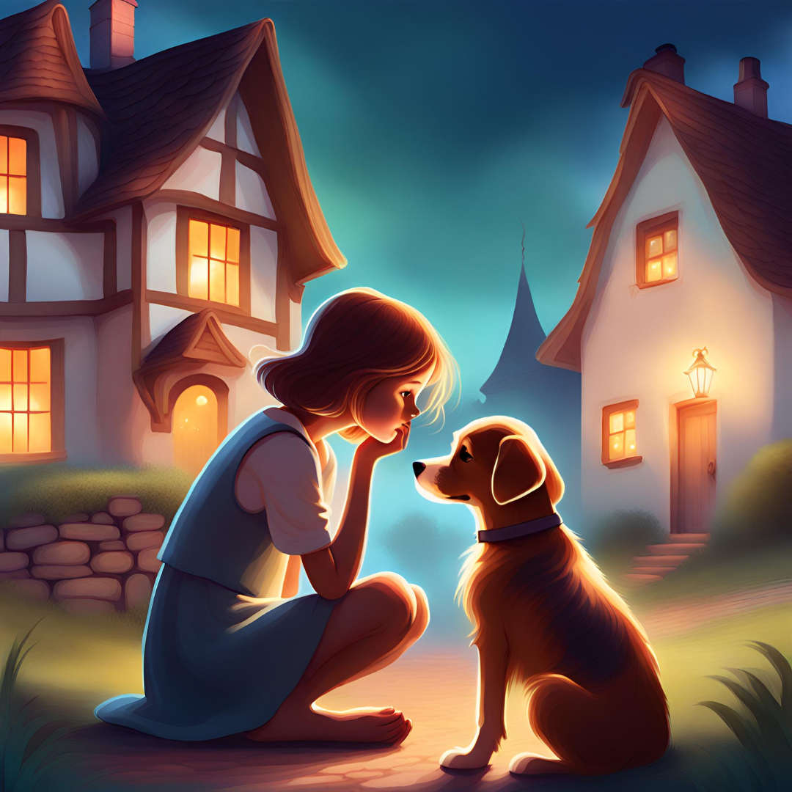
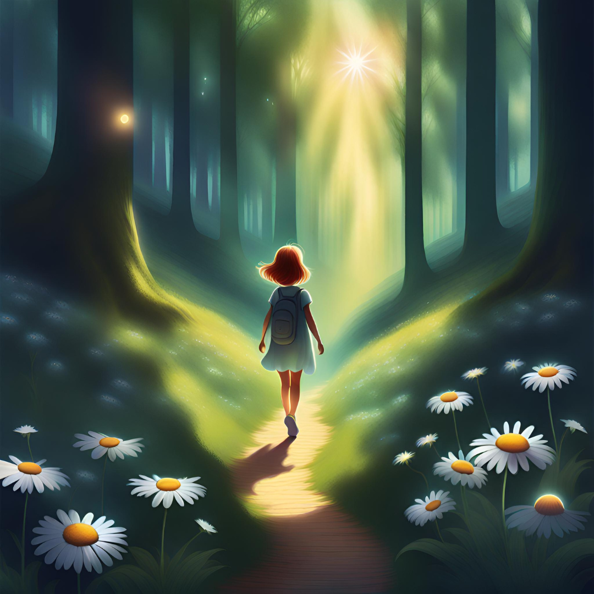
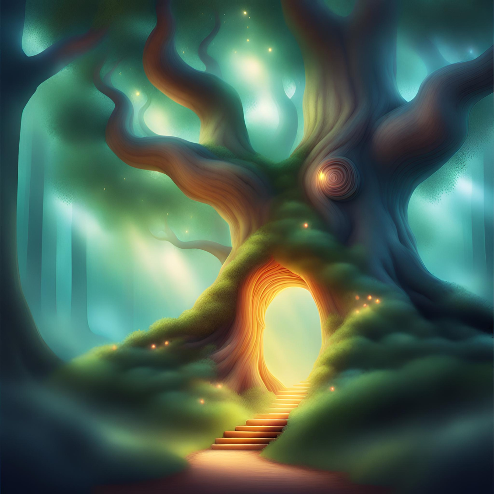
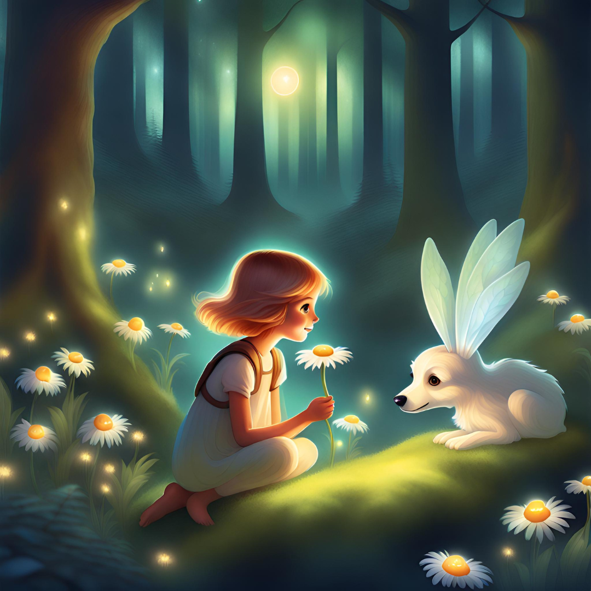
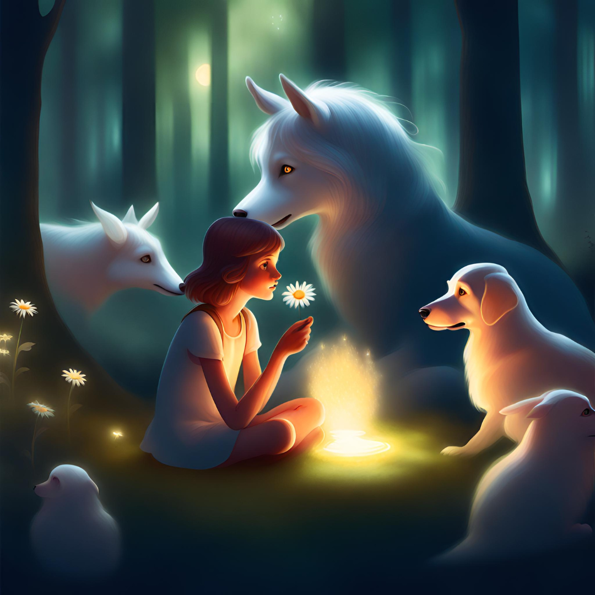
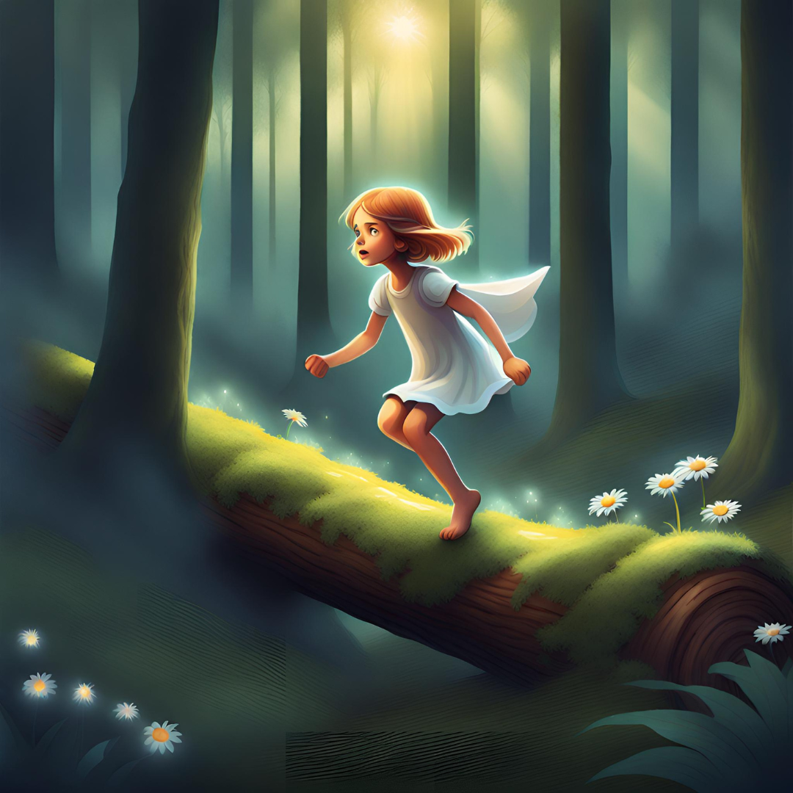
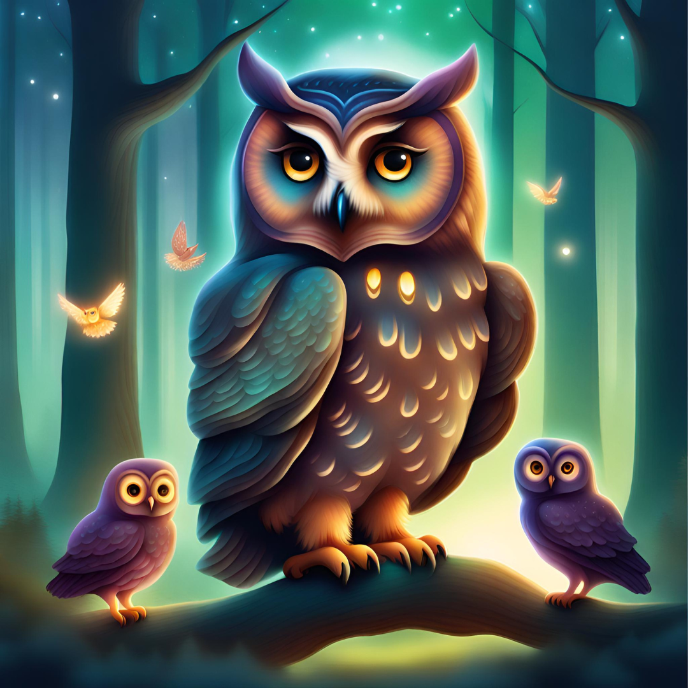
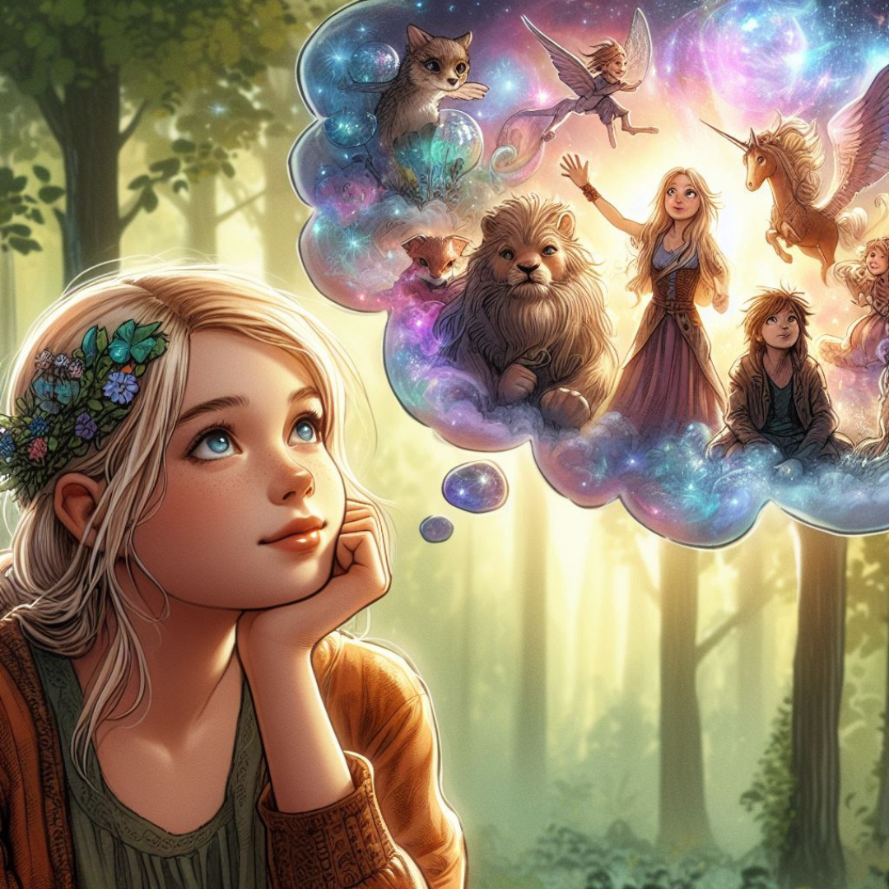
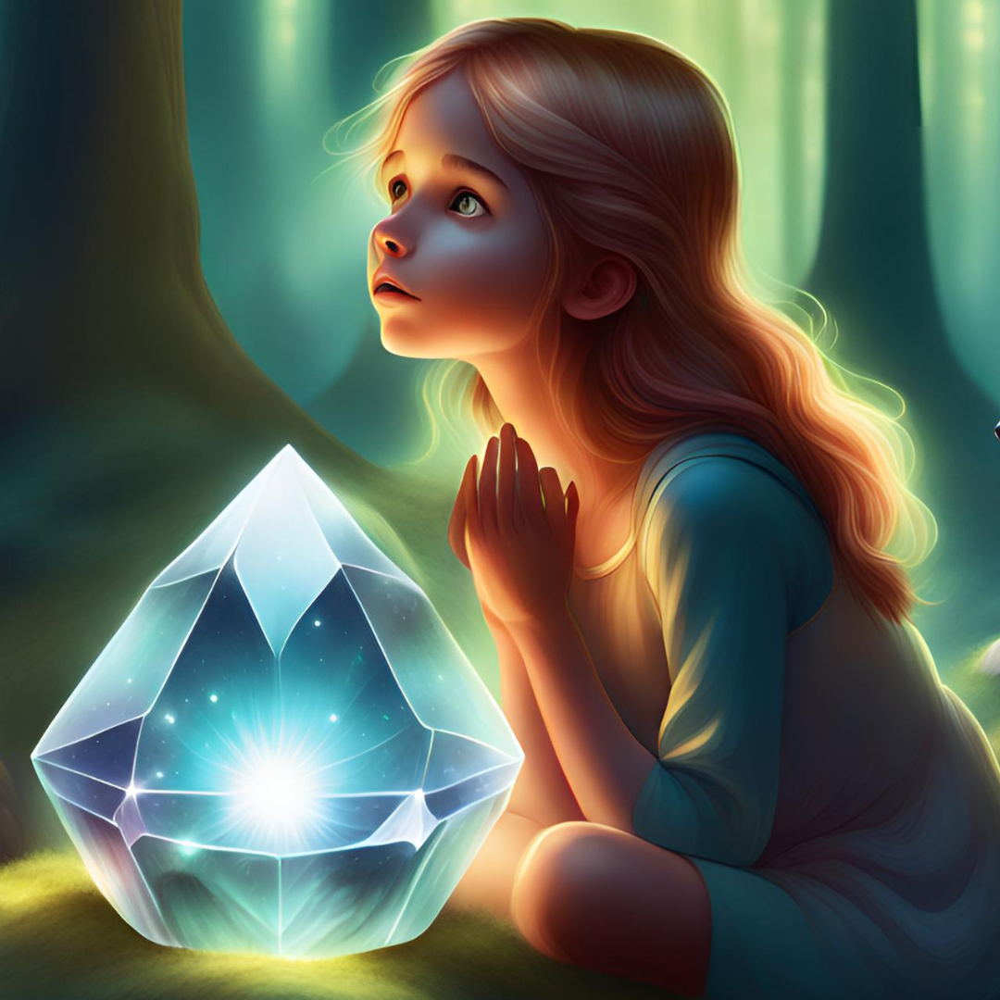

Once upon a time in a quiet village, there lived a lively and
curious girl named Daisy. Recently, Daisy had experienced the loss
of her cherished companion, Elise, leaving her heart heavy with
sorrow.
“Elise was a radiant golden retriever adorned with silky fur. She
was my constant source of joy and comfort. I longed dearly for the
opportunity to relive those precious moments with my beloved Elise
once more.”

One sunny day, Daisy decided to go for a stroll to the outskirts of her village. Taking a new route, she chanced upon a hidden path. It led to a scenery she had never seen before.

"Oooh could this possibly be the enchanted Sunnyvale Forest that I had heard about in the stories my grandmother used to tell me? Wow, this forest is filled with vibrant flowers, talking animals, and enchanted trees that whisper stories of the ancient times.” said Daisy.

Daisy was fascinated by the wonders of the magical forest and made
friends with the charming creatures who lived there.
“The animals there taught me to respect nature while the trees
shared the importance of kindness and harmony. Every visit to the
magical forest has filled me with joy and wisdom.” said Daisy.

One day, Daisy overheard the animals whispering frantically.
“Hey friends, what are you guys talking about?” Daisy asked.
“We are talking about a magical crystal hidden deep within the
forest. Legend had it that this crystal possessed the power to make
one wish come true.” the animals said.
Daisy's eyes sparkled with excitement, and she decided to embark on
a quest. What was the quest?

Daisy exclaims excitedly, “I’m gonna go off on a quest to find the
magical crystal to bring Elise back.”
As Daisy journeyed through the forest, overcoming obstacles and
solving riddles, she finally reached the heart of the enchanted
forest.

There, nestled among the roots of the oldest tree, she found the
dazzling crystal.
“Woahhh the crystal is shimmering with an otherworldly glow. It’s
tempting me to make another wish.” said Daisy.
However, just as Daisy was about to make her wish, a wise owl
appeared.
The owl said "Child, the magic of the crystal comes with great
responsibility. Whoever seeks its power can have any one wish
granted. But, the forest spirit will entrust them with the role of a
forest guardian.
Your form will change to become one with the forest and you will
have to live in this forest as its guardian forever."
Daisy froze when she heard this.

"So does this mean that all of the mystical creatures I’ve seen
until now, were all once human?" said Daisy.
The power of the crystal had granted them their heart's deepest
desire but had robbed them of the life they used to live.
She recalled their forlorn eyes. How her newfound friends were
always overjoyed to meet her.
How some had even tried to follow her back to the human realm but
were stopped by the barrier separating their two worlds.

"It all makes sense but I have a dilemma now. If I make my wish, it
would change my life but I would get to see my beloved friend,
Elise, again." said Daisy.
As she pondered before the elder tree, slowly her forest friends
gathered around her. All eyes were on Daisy and the shimmering
crystal as everyone patiently awaited her choice.
